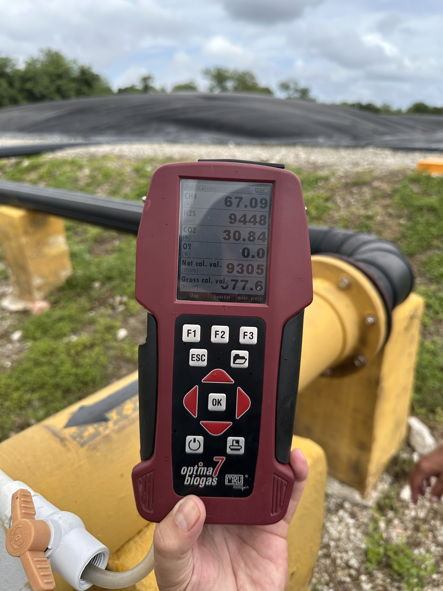

Sensores en línea integrados al PLC/SCADA para control continuo, complementados con analizadores portátiles para verificación independiente. Cada lectura sustenta operación, calibración y reportes al cliente.

Sensores de presión, temperatura, caudal y composición integrados al sistema de control. Datos cada segundo.
Analizador portátil multi-gas (CH₄ / CO₂ / O₂ / H₂S) operado por personal calificado en puntos críticos del proceso.
Muestreo y análisis externo cuando el cliente o el esquema de certificación lo requiere.
Calidad del biogás crudo: composición y caudal de entrada al tratamiento.
Después del acondicionamiento, antes del upgrading.
Calidad del biometano producto — punto de control principal.
Verificación final antes de entregar al cliente o al sistema de despacho.
Cada operación queda documentada. Los reportes son la base para acuerdos de calidad con el cliente y para esquemas de certificación de atributos cuando aplican.
Diaria, automática, con eventos relevantes registrados.
Por lote o por período según convenio comercial.
Datos disponibles para esquemas tipo i-TRACK u otros aplicables al proyecto.
Acompañamiento técnico en visitas de auditores externos.
Diseñamos el plan de monitoreo a la medida de las exigencias del consumidor o del esquema de certificación.